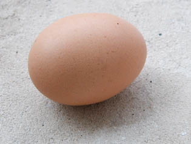
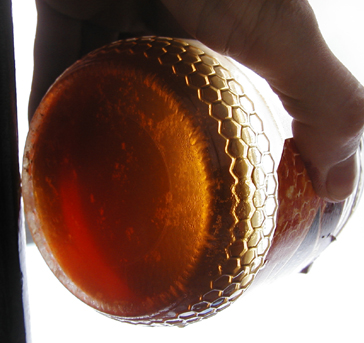
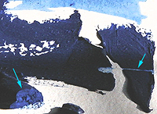
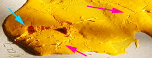
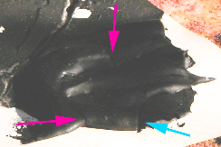

L'oeuf
Oeuf, jaune et huile d'oeuf
Habituellement, c'est le jaune qui est employé car c'est lui qui contient le
liant, la lécithine, dite "huile d'oeuf".
Xavier de Langlais (lui-même inventeur d'un médium à l'oeuf pour la peinture à
l'huile) mentionne ce produit, cette pure "huile d'oeuf" dont le coûteux procédé
d'extraction a été mis au point par Vibert : "[...]
elle ne se corrompt pas et dissout les résines à froid. En outre, bien que
non siccative par elle-même elle forme des vernis qui durcissent normalement."
"[...] il n'est pas
certain que Vibert (qui a su enrichir le matériel artistique de plusieurs
produits intéressants, notamment de vernis au pétrole parfaitement stables) n'a
pas commis une erreur en isolant l'un des éléments constitutifs de l'oeuf pour en
faire une huile de broyage.
". (Xavier de Langlais, La technique de la
peinture à l'huile).
Sur un sujet proche
(vernissage d'une tempera),
lire le courrier d'une
lectrice
Une puissante émulsion qui implique des contraintes
L'intérêt du procédé à l'oeuf réside pourtant dans le fait que le jaune d'oeuf
est une émulsion naturelle (émulsion
maigre). Il peut aussi bien être employé comme liant pur que comme adjuvant
pour la peinture à l'huile ou bien comme complément légèrement oléagineux pour
les peintures aqueuses.
Attention : le jaune
d'oeuf, bien que partiellement gras, sèche tout de même assez rapidement.
Notamment, employé sans huile additionnelle, il rend malaisé le travail
alla prima à cause de temps de séchage trop courts. Il se prête par
contre très bien aux travaux semi-transparents, même s'il a longtemps été
utilisé comme une gouache, à la manière opaque.
Le diluant le plus utilisé est l'eau (de préférence
distillée car chimiquement neutre et plus pure).
L'essence peut aussi être utilisée mais son intérêt et son efficacité ne se
révèlent pleinement que lorsque la peinture est adjointe de corps plus gras (émulsion
grasse) ou bien, dans le cas de la térébenthine, lorsque l'on veut diluer
massivement la peinture car elle apporte des résines protectrices et
solidifiantes. Dans ce cas, il est inutile d'en incorporer de grandes quantités
(1/20ème, 1/10ème du volume de l'eau), sauf, encore une fois, si des corps gras
ont été ajoutés.
Emploi ancien du blanc d'oeuf au broyage
A l'époque des
enluminures, lorsqu'il fallait broyer un pigment dans le but de travailler à la
plume et non au pinceau, on utilisait du blanc d'oeuf non pas comme liant mais
comme adjuvant. Malgré les étranges dogmes proférées et appliqués dans ce
domaine à cette époque, nous dirons seulement qu'il est possible que ce produit
ait effectivement pu apporter un peu de fluidité aux pâtes étant donné sa charge
en eau.
Certains auteurs
actuels mentionnent l'emploi du blanc d'oeuf comme liant au Moyen-âge. La chose
n'est pas totalement impossible mais les conditions de mise en oeuvre devaient
être assez complexes étant donné les insuffisances dramatiques de cette substance par
rapport au jaune.
Médor et la tempera
Une histoire vraie, d'un confrère qui s'essayait à la tempera à l'oeuf.
Il avait posé plusieurs tableaux le long du mur pour qu'ils sèchent, puis
s'était absenté.
A son retour, il trouva son chien en train de terminer un festin de tempera.
L'animal avait soigneusement léché (et détruit) les tableaux.
Médor eut beaucoup de chance que notre ami n'ait pas employé de pigments
vraiment toxiques pour ses travaux. Il n'a donc ingéré que des arylides et
autres azoïques, peut-être aussi quand même une peu de phtalocyanine de cuivre,
déjà moins sain, mais pas de cadmium ni d'autres substances plus dangereuses.
L'animal ne tomba pas malade, l'histoire fait donc rire.
Il fallait donc bien mentionner ce danger tout spécifique à la peinture à
l'oeuf. Il est important de placer les tableaux frais et les pâtes non seulement
hors de la portée des enfants, mais aussi de celle des
animaux.
Éléments pour recettes
Comme en gastronomie, les recettes de peintures à l'oeuf sont innombrables.
Elles sont tantôt savantes, tantôt abracadabrantes. Elles peuvent mettre en
oeuvre les éléments que nous avons pu recenser (voir ci-dessous) et beaucoup
d'autres, valables ou non. Nous vous en livrons la liste non sans émettre
quelques réserves : chaque élément ajouté constitue un risque supplémentaire de
provoquer une réaction chimique ou mécanique incontrôlée sur le moyen ou le long
terme.
A noter, justement, que les méthodes les plus classiques de tempera à l'oeuf (icônes) peuvent
certainement apporter des solutions stables, éprouvées par le temps, mais elles
ne sont pas toujours très ludiques ! D'une manière générale, il est
théoriquement prudent d'éviter d'incorporer des corps
alcalins qui risqueraient de saponifier la
graisse du jaune. N'hésitez pas à nous
faire part de vos expériences.
Liste de composants utilisables pour une tempera à
l'oeuf :
* le jaune,
pour son rôle de liant-émulsion au satiné merveilleux. Il peut être
pertinent de le crever afin de ne pas introduire sa membrane dans le mélange
* une
huile (oeillette, lin, etc., voir Les huiles), qui apporte sa solidité, sa
beauté satinée, son épaisseur, son temps de séchage. Voir
émulsion huile/oeuf
*
le liant méthylcellulosique,
(voir article) qui permet d'accroître l'onctuosité de la peinture
*
la
caséine (voir article). Pour le moment, nous ne pouvons nous prononcer
quant à la pertinence de son emploi. Tout témoignage est bienvenu (nous
écrire).
* une résine tendre
(dammar ou - plus rarement - mastic dilué dans l'essence, térébenthine de
Venise), pour la même raison que l'huile : l'obtention d'une solidité
tempérée. Les recettes aux résines dures comme le copal et l'ambre ou à
l'huile de copahu ne sont pas forcément à conseiller étant donné la
structure déjà solide de la tempera à l'oeuf - quoique l'adjonction
d'éléments comme la cire ou l'emploi d'une grande quantité d'huile
pourraient compliquer cette donnée structurelle et autoriser l'emploi de ces
produits moyennant expérimentation approfondie.
1/2 coquille de résine diluée dans l'essence (chimiquement neutre et
non-aromatique si
possible - voir Les essences) est une proportion normale pour un jaune d'oeuf entier, alors que
le baume de térébenthine de Venise ne doit être adjointe qu'en doses homéopathiques
(5% grand maximum)
* la glycérine
(3 gouttes pour un jaune d'oeuf environ), substance assouplissante et
retardant le séchage, très intéressante mais non anodine chimiquement
parlant - il s'agit d'un polyalcool. Elle
peut donc interagir lentement mais sûrement avec d'éventuels éléments acides.
Lire l'article consacré à ce produit.

*
le sucre candy ou le miel, très conseillés par certains
artistes, allient plusieurs avantages : conservation, souplesse, onctuosité,
"temps d'ouverture" plus long. Attention : pour la même raison que pour la
glycérine - tous ces produits contiennent des alcools -, la présence
d'acides dans la pâte et le support peut rendre délicate l'adjonction de
sucre. En ce qui concerne le miel, ils est souhaitable de choisir une
variété classique, liquide et transparente (voir photo ci-contre)
* la gomme arabique
(environ 15 à 30 cl d'eau
gommée pour un jaune d'oeuf) pour une cure amaigrissante... Il s'agit là
de se rapprocher des propriétés de transparence de l'aquarelle
*
le vinaigre, adjuvant très classique qui prolonge la
conservation de la pâte mais dont la composition chimique peut poser des
problèmes d'interactions. Contenant de l'alcool éthylique et un aldéhyde, il peut interagir avec
d'éventuels éléments acides. Lire l'article du
glossaire.
*
le jus de persil est utilisé en lieu et place du vinaigre par
quelques artistes qui n'ont pas pu (ou voulu) nous en donner la raison.
L'utilisation de cet ingrédient serait traditionnelle mais les traditions,
dans ce domaine, sont innombrables. Toute information au sujet de cet
adjuvant sera la bienvenue
*
les vins blancs doux, utilisés à la place du vinaigre et/ou du
sucre, sont chaudement conseillés par certains artistes. Contenant de
l'alcool, ils peuvent interagir avec d'éventuels éléments acide mais
apportent encore plus que le vinaigre des propriétés de conservation.
*
Le citron à petite dose pourrait présenter la même fonction
conservatrice. Il vaut mieux éviter de l'employer conjointement avec de
l'alcool mais surtout avec des éléments alcalins
(caséine, pigments alcalinoterreux,
etc.).
* la
cire (2 cuillerées à café de cire
d'abeille blanche pour un jaune d'oeuf), combinée à
des résines tendres ou dures et/ou de la gomme arabique, en grande quantité
de toutes façons pour compenser la mollesse et la fragilité de cet adjuvant
* le
blanc d'oeuf, qui peut être utilisé à la manière d'un médium :
très aqueux (85% d'eau), très maigre mais très
visqueux (voir albumine) et
dépourvu d'onctuosité ; il est transparent, il donne de la vivacité aux
couleurs, mais employé massivement il n'a aucune tenue : il devient friable
au séchage. Il faut impérativement l'associer à un autre produit : un jaune,
une huile, un liant aqueux, une résine.
* l'eau, de
préférence
déminéralisée ou distillée.
*
La térébenthine (voir glossaire), utile comme diluant surtout si vous ajoutez
des corps gras. Elle a aussi une fonction de médium, apportant les résines
que ne contiennent pas les diluants purs.
Lire un exemple de
recette dans l'article consacré aux liants
émulsions.
Une pratique
originale mais digne d'intérêt : la peinture à la mayonnaise
Ce n'est pas une plaisanterie. Ce n'est pas non plus un
procédé simple et rien ne dit qu'il fonctionne vraiment. C'est véritablement une piste de recherche qui peut intéresser
des peintres et des curieux (voire des fabricants peut-être), mais on ne pourra
livrer ici absolument aucune "recette de peinture" directement exploitable.
Avant d'en dire davantage, précisons qu'en cuisine, il existe en ce qui
concerne la mayonnaise une infinité de
recettes et de conseils souvent complètement absurdes (voire pires qu'absurdes) et encore
plus souvent dénuées de fondements scientifiques ou expérimentaux. Avant d'effectuer les expériences qui ont permis la réalisation de
ce petit texte, nous nous sommes notamment informés des travaux de Hervé This, un scientifique
spécialisé bien connu des cuisiniers professionnels, afin de partir d'une vision
où le vrai est d'emblée largement dégagé du faux ou du flou sur ce sujet en fait très épineux et assez "pointu"
malgré les apparences banales.
Quel est l'enjeu ? L'obtention d'une pâte émulsionnée de bel aspect capable
de siccativer en profondeur et autorisant donc de forts empâtements aussi bien
que des jus très légers. Tout cela avec des produits parfaitement naturels.
C'est en fait, ne le cachons pas, un enjeu de tout premier plan, presque un rêve
de peintre et rien ne
dit que les ébauches d'expériences qui sont décrites ci-dessous constituent
vraiment un commencement de solution à cette quête. En fait, rien n'est sûr, le
terrain est incertain.
De quoi s'agit-il ? Essentiellement d'une tempera à l'oeuf dont la spécificité repose
sur les éléments suivants :
* le fait de battre les jaunes afin
d'incorporer de l'air dans la future pâte,
* l'apport d'une huile dont la siccativation
bénéficie de cet apport d'air.
Au départ, une mayonnaise "culinaire"contient ceci :
* du jaune d'oeuf (remarquer que le blanc est
utilisable aussi mais nos expériences ont démontré qu'il est plus ardu alors
d'obtenir une substance bien mousseuse),
* un apport aqueux sous la forme de vinaigre ou
de citron dont les acides jouent un rôle avant tout gustatif - on peut dont
utiliser de l'eau pure dans le cas qui nous occupe -,
* une petite quantité d'huile alimentaire. On
peut se servir de l'huile de tournesol en peinture, mais il est très facile de
lui substituer de l'huile de lin ou une autre huile à peindre. Cependant, le
tournesol présente un petit avantage pour certains travaux très
particuliers : l'huile est consommable et si le pigment l'est aussi, c'est
toute la pâte à peindre (si elle est fraîche) qui peut être ingérée.
* et enfin des apports destinés à rehausser le
goût : le sel et le poivre, inutiles ici.
En quelles quantités ? Difficile a dire : d'une part il est difficile de
trouver une recette indiquant des proportions, d'autre part elles varient de
toute façon en fonction des goûts et des produits. Pourtant, c'est là que tout
se joue dans notre démarche comme nous allons le voir..
Note : dans les images qui
suivent,
les flèches bleues pointent des accidents provoqués
(entailles dans la pâte) et les flèches mauves
désignent des accidents non voulus.
Précision : pour faire monter
ces "mayonnaises",
utiliser de préférence une batteuse électrique.
Lorsque le produit "colle au fouet", c'est optimal, prêt à l'emploi.
Avertissements :
n'essayez pas de manger de tels mélanges !
Les ingrédients ne sont pas toxiques mais mauvais et indigestes,
sans parler de la toxicité propre aux pigments que vous pouvez ajouter.
Éviter de faire sécher ce type de travaux a proximité de
produits
alimentaires ! pour ne pas risquer une contamination bactérienne
qui, elle, serait très grave (salmonelle ou autre).
Noter que la fraîcheur n'est pas conseillée spécifiquement
dans ce contexte, au contraire. Donc le réfrigérateur n'est d'aucun secours.
Voici le résultat d'un test effectué avec deux oeufs, à peine une petite
cuillerée d'eau, une faible quantité d'huile de lin (petite cuillerée à peine
remplie) et du pigment outremer foncé commun :

L'empâtement en bas à gauche est important. Il est épais d'un
peu moins d'un centimètre. La césure volontaire, réalisée après trois jours de
séchage révèle une matière déjà sèche et d'un aspect assez franc. Pourtant,
comme on le voit ici à droite, une "incision" pratiquée avec une lame simple
révèle une pâte assez friable.
De très fines craquelures cette fois involontaires sont apparues
lors de la première journée de séchage dans les épaisseurs, mais en faible
nombre. Leur nuisance semble pratiquement négligeable.
Cette pâte, bien qu'un peu fragile, n'est pas de mauvaise
qualité. Il faut surtout en signaler la siccativité
remarquable, mais aussi - qui peut le plus peut le moins - la
capacité de former des lavis excellents (petit exemple en haut de l'image), ce qui n'est pas
négligeable.
Voici maintenant l'extrême contraire : une peinture
beaucoup
plus oléagineuse. Les ingrédients sont les mêmes mais cette fois on a adjoint
trois cuillerées à soupes d'huile de lin. Le pigment est un jaune
azoïque banal.

Le résultat est catastrophique ! Alors que l'on s'attendait à ce
que l'huile en bonne quantité soit solidifiante, elle est tout le contraire. La
pâte est très friable (la flèche bleue pointe une entaille qui a arraché des
fragments presque pulvérulents) et les fissures non provoquées sont nombreuses
(apparues dès les premiers jours). Voir flèches mauves. Enfin, cette pâte manque
de "corps", elle est trop fluide (même avant adjonction du pigment, la
mayonnaise obtenue est peu crémeuse) et elle siccative relativement lentement.
Autre expérience, avec deux cuillerées à soupe d'huile de lin et
un noir d'ivoire sans particularité. Le résultat est intéressant :

Il y a là une certaine "tenue", des empâtements conséquents
(voir la brisure commençant à la pointe de la flèche bleue), mais...
malheureusement, les fissures non provoquées, pour être peu nombreuses, sont
considérables (flèches mauves). Elles cisaillent la couche picturale du support
à la surface.
La siccativation a été rapide et homogène malgré la quantité
d'huile et l'empâtement. De plus, la pâte est cette fois plutôt solide.
En conclusion, ce "procédé à la mayonnaise" semble - sous
toute réserve - avoir des ressources et doit à tout le moins être exploré. Grâce
aux travaux d'Hervé This et d'autres personnes qui se
sont attachées, depuis quelques années, à résoudre scientifiquement et
expérimentalement des questions jusqu'alors largement laissées en friche, nous
pouvons entrevoir des possibilités a priori intéressantes pour la peinture. Mais les
expériences décrites ci-dessus sont des balbutiements. Tout reste à faire ou
presque.
Voir aussi Les dialogues de
Dotapea, Chap. I, A propos des liants
et
Liquides à seuil in La rhéologie.
La coquille d'oeuf
Son emploi comme épaississant coloré est traité dans un autre article.
Cliquer ici.
Son emploi en incrustation dans les laques de Coromandel est traité dans
l'article concerné. Cliquer ici.
Les autres techniques (incrustation, collage ou autres) ne sont pas traitées
spécifiquement car elles sont trop nombreuses et ne posent pas de problèmes
techniques particuliers.
Lecture conseillée :
La
coquille d'oeuf sur Pourpre.com
Un site à visiter
absolument
Un espace entièrement dédié à la tempera a retenu notre
attention :
eggtempera.free.fr/fr
Une agréable ballade sous le signe de la passion vous révélera
des informations techniques et historiques particulièrement intéressantes...
_____
l'oeuf de Dotapea/ArtRéalité
La redécouverte des emplois de la
coquille nous a incités à choisir l'oeuf comme sigle de Dotapea et de ArtRéalité.
Tout peut être utilisé dans l'oeuf. Cet
objet familier peut être intégralement mis au service de la technique artistique
qu'il symbolise donc parfaitement. D'autre part, par sa fragilité et son
efficience vitale, il évoque l'audace et
l'efficacité.
Assez de raisons pour que nous en
fassions notre
totem.
Retour
début de page